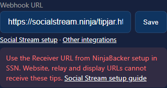

1. 連接帳戶
從 SSN 桌面應用程式或 Chrome 擴充功能開始。直播期間請保持 SSN 執行。
- 開啟 NinjaBacker。建立帳戶並完成 Stripe 設定，即可接受付款。
- 在 NinjaBacker 控制台中開啟 Social Stream Ninja，並複製 Private Tip ID。
- 在 SSN 中開啟收益 > 商店與支持 > 已連接的平台 > NinjaBacker 捐款 > 設定。輸入使用者名稱和私有 Tip ID。
- 將傳遞方式保持為即時訂閱（簡單），啟用 NinjaBacker 捐款，然後點選儲存設定。
如果看不到已連接的平台，請在 SSN 中切換至完整模式。
即時訂閱不需要 Webhook。它會在連線期間顯示新小費，但不會重播 SSN 關閉時收到的小費。

2. 選用：使用 Webhook
選擇可靠 Webhook，可在 SSN 關閉時將小費排隊保留最多七天。
- 在 NinjaBacker 中開啟 Webhook。在 Webhook Signature Secret 下點選 Generate 並複製密鑰。如果已在使用密鑰，請複製現有密鑰。
- 在 SSN 的 NinjaBacker 設定中選擇可靠 Webhook，貼上簽章密鑰，然後點選儲存設定。
- 在 SSN 中點選複製接收 URL。將它貼到 NinjaBacker 的 Webhook URL 欄位，然後點選 Save。

接收 URL 以下列內容開頭：
https://api.socialstream.ninja/v1/ninjabacker/webhook/...Tip Jar、聊天面板及其他顯示 URL 用於 OBS，無法接收 Webhook 請求。
切換回即時訂閱
切換會刪除 SSN 接收端中排隊的小費。也請清空 NinjaBacker 中的舊 Webhook URL 並儲存。
3. 將顯示畫面加入 OBS
- 若要顯示提醒，請在商店與支持的 OBS 疊加層對象中選擇 NinjaBacker 捐款。複製疊加層連結。
- 若要顯示累計目標，請開啟收益 > Tip Jar 與目標進度條。選擇樣式與目標，然後複製連結。
- 在 OBS 中新增瀏覽器來源，並貼上顯示連結。SSN 和顯示畫面必須使用同一個工作階段。
向觀眾分享公開的 NinjaBacker 小費頁面。疊加層連結放在 OBS 中，接收 URL 放在 Webhook 欄位中。
4. 檢查設定
開啟 SSN 的 NinjaBacker 提醒疊加層。在 NinjaBacker 中開啟 Testing，並點選 Send Test Tip。該疊加層中應出現測試提醒。
查看 Send Test Tip 下方的結果。Webhook accepted 表示請求已被接收，不代表 OBS 已顯示提醒。如果失敗，請修正 URL 或簽章金鑰，然後重新測試。控制台測試會在五分鐘內重試。
測試小費不會增加 Tip Jar 金額，不會在聊天中顯示為付費捐款，也不會觸發付費獎勵。
沒有測試提醒？
保持 SSN 執行，並啟用 NinjaBacker 捐款。檢查使用者名稱和 Tip ID 是否屬於同一個帳戶。使用 Webhook 時，請重新整理 NinjaBacker 的 Delivery History，並檢查接收 URL 和簽章密鑰。
出現 HTTP 405 或顯示 URL 錯誤？
從 SSN 的可靠 Webhook 設定中複製接收 URL，儲存至 NinjaBacker，然後傳送新的測試小費。儲存新 URL 後，會停止向舊位址重試。


聊天中顯示了小費，但目標沒有增加？
檢查 Tip Jar 的工作階段以及來源、捐款類型和付費事件篩選器。小費金額應使用金額目標。退款不會從 SSN 的提醒或目標中扣除。